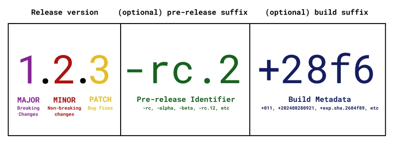

# DON'T use "~" for home-path, it won't work...
[Desktop Entry]
Type=Application
Terminal=false
Name=${APPNAME}
Icon=${PATH_TO_ICON} #Icon used in sidebar can be a .svg or .png
Exec=${PATH_TO_STARTSCRIPT}
Comment=Start my app
Categories=Application;
semantic versioning tries to add some semantic / meaning, to the way that software versions are created. So one can estimate how much impact a certain change of version might have on its software. - Changes of 'bigger versions' can always also include changes of the lower versions too - During initial development stage Semantic versioning suggests start with version 0.1.0 because a lot of changes are to be expected in this stage, so if we would start at 1.0.0 we might end up at 100.0.0 very fast. So 1.0.0 is saved for the first stable version - Sometimes one might release something before official release date, for this scenario the pre-release-identifier was implementedMajor version
- If this number changes, breaking changes are to be expectedMinor version
- If this number changes, it means new features have been added to the software - minor changes are no breaking-changes and should be backwards compatible - after the minor version changes, the patch version is set back to zeroPatch version
- No changes or new fatures - This number is increased after bug-fixes or hot-fixes - When a minor or major version gets increased, the patch version gets set back to zero
To tar and gzip a folder, the syntax is::Adding - before the options (czf) is optional with tar. The effect of czf is as follows: c — create an archive file (as opposed to extract, which is x) f — filename of the archive file z — filter archive through gzip (remove this option to create a .tar file) If you want to tar the current directory, use . to designate that.tar czf name_of_archive_file.tar.gz name_of_directory_to_tar
- Go to the searchbar and search for Disks - In the next Window search for the Stick on the L-Side of the window. - If we click on the "gear" icon we can then do different things like format or adjust partitions etc. IF YOU WANT TO BE SURE IT WORKS ON WINDOWS JUST DO IT WITH THE UBUNTU APP !! AND NOT CMDs
AGAIN.. IF YOU WANT TO BE SURE IT WORKS ON WINDOWS JUST DO IT WITH THE UBUNTU APP !! AND NOT CMDs OR TRY AND MAKE SURE YOU ADD LABELS / DATENTRAEGER-BUCHSTABEN SOMEHOW (not sure if it is that but could be)
- Open the Terminal (Ctrl+Alt+T)
- List your block storage devices by issuing the command lsblk Then identify your pen drive by it's SIZE. For ex. /dev/sdb
- Overwrite everything pen drive (This step is Optional) be careful this command could erase one of your other disks. It will take some time. (option status=progress is not mandatory but provides you some feedback)
It will pretend to be stuck. Just be patient. For example:sudo dd status=progress if=/dev/zero of=/dev/${WHATEVER} bs=4k && syncdd if=/dev/zero of=/dev/sdb bs=4k && sync dd: error writing '/dev/sdb': No space left on device 1984257+0 records in 1984256+0 records out 8127512576 bytes (8.1 GB) copied, 1236.37 s, 6.6 MB/s- Make a new partition table in the device:
Then we could for ex. press letter o to create a new empty DOS partition table.sudo fdisk /dev/sdb- Make a new partition:
- Press letter n to add a new partition. You will be prompted for the size of the partition. Making a primary partition when prompted, if you are not sure.
- Then press letter w to write table to disk and exit.
- Format your new partition.
- See your new partition label with the command lsblk for ex. this could be /dev/sdb1. Once again pay attention to this name as there will not be any protection to prevent you to erase an other disk.
- Issue the command below to format the new volume:
sudo mkfs.exfat /dev/${WHATEVER}Replace /dev/${WHATEVER} with your corresponding device. If use on Windows and Linux use exFAT
- Eject the device:
sudo eject /dev/sdb
Your disk is formatted as FAT32 and shows in Device Manager, but Windows Explorer can't see it because it doesn't have a drive letter assigned.
Press Windows + X on your keyboard.
A menu will appear. Click on Disk Management.
Alternative: Search for "Disk Management" in the Windows Start menu and click it.
Why? Disk Management is where Windows assigns drive letters to disks. Without a drive letter, Windows Explorer cannot access the disk.
In Disk Management, look at the list of disks. Find your 476 GB disk (or whatever size your sdc is).
Look for the partition labeled FAT32. It may appear in black or with a ? symbol if no drive letter is assigned.
Why? You need to identify which disk is yours before making changes.
Right-click on the FAT32 partition for your disk.
A context menu will appear with options like Properties, Format, or Delete Volume.
Click on Properties.
In the window that opens, look at the top. You should see a field showing the drive letter (like D:, E:, etc.).
If it says No drive letter or is blank, you need to assign one:
Why? Windows Explorer only shows disks that have a drive letter. Without one, the disk is invisible to Explorer.
Open File Explorer (Windows + E).
Your disk should now appear in the left sidebar under This PC with the drive letter you assigned (e.g., E: New Volume).
You can now access the disk and copy files to it.
Go back to Linux and reformat the disk to ensure it's properly initialized:
sudo mkfs.vfat -F 32 /dev/sdc1Then plug it back into Windows and repeat the steps above.
Why? Reformatting ensures the disk has proper Windows filesystem structures that Windows recognizes.
- you can try the GUI ISO Image Writer that can be installed on Ubuntu, not sure if it really works...
- for e.g.:source /etc/os-release is equal to . /etc/os-release
# tee # EOF # tee EOFtee combined with EOF
Say you are using bash, and you have some code copied that you’d like to quickly put into a new file or overwrite the contents of an existing file. This is the easiest way:- Remember to manually type the ‘EOF’ after the text you pasted in. If all went well, you’ll have a file example.txt filled with the contents from your clipboard. - This method will overwrite any contents of example.txt if the file already exists. To append instead, you could simply add >> like this: tee >> example.txt <<EOF (and so on). - Anything you paste in will be interpreted. This usually won’t matter, but if you use $ in your contents, it will. Here’s how to adjust in case you have contents with $ and ` (backticks): use tee example.txt << 'EOF' (at the end, you’ll still write EOF as normal (no changes)tee example.txt <<EOF paste your multiline clipboard text here EOF
# EOT # EOF # EOT vs. EOFEOT & EOF, meaning and applications
In this post, we will discuss about EOT & EOF, meaning and the applications. We will go into some details about it’s concept in Programming. EOF simply means END OF FILE while EOT simply means END OF TRANSMISSION. They are both signals sent to files or executables but have some slight difference, advantages and disadvantages. In ASCII table, both of them have different integer values. EOF has has the integer value “-1” while EOT has the integer value “4” and are both applicable in C programming, Unix like operating systems (Linux, Mac OS) and DOS(windows). From EOF full meaning (END OF FILE), it’s quite obvious what it does, but if still looks confusing, let me go into details. EOF is a signal sent or automatically added to a file to inform the operating system that the file being read or written ends at the last character of the last line. EOF is always found after the last character of the last line in a file and is always invisible to users or programmers. EOT is also a signal sent to a file stream to indicate end of message to a computer when using the standard input. It is risky sometimes because it’s also being added to the file and corrupts binary files. Going into details on how to use them, there are shortcut keys that adds them to a file or an input. Ctrl-V + Ctrl-D sends EOT to a file stream. Ctrl-Z sends EOF to a stream in an interactive mode. Practical applications on EOF is found in the cp command (for Unix), COPY command (for windows), echo (for both operating system), cat (for Unix) and also in text editors. The cp/copy command copies each character in the first file into the buffer serially and writes it to the second file till the EOF is found in the first file, then the loop terminates. EOT is applicable in Reverse Engineering when passing cracked password to a file which can be used as an input to the cracked application. The EOT is also similar to EOF operation but is always favourable in interactive mode and also dangerous when dealing with binary files. In summary, if confused on which one to use, I suggest you go with EOF for safety purposes. You can use EOT if required for a process or execution.
# envvars #variables # env variablesCreate environment variables
Different ways to create env-variables
| Command | Type | Visibility | Scope | Persistence | `printenv` Output |
|---|---|---|---|---|---|
BANANA=rama | Shell Variable | Invisible | Current shell only | Temporary (session-based) | Will NOT appear |
export BANANA=rama | Environment Variable | Visible | Current shell and child processes | Session-based | Will appear |
echo 'export BANANA=rama' >> ~/.bashrc | Persistent Environment Variable | Visible | All new shell sessions | Permanent until removed | Will appear in all new terminals |
printenv
sdc
├─sdc1 linux_raid_member 1.2 db01b:0 2c8cf926-cc74-17ee-9caa-2cac67cf71ef
│ └─md127
├─sdc2
└─sdc5 linux_raid_member 1.2 db01b:1 2e870b1c-0611-d8de-872b-344186c9b1cb
└─md126
Your disk has RAID metadata from previous use. You must remove this before reusing the disk, otherwise the system may try to activate old RAID arrays.
If RAID arrays are running, stop them first. This prevents the system from trying to use them while you're cleaning the disk.
sudo mdadm --stop /dev/md127
sudo mdadm --stop /dev/md126
sudo mdadm --stop --scanWhy? RAID arrays keep data in memory. If you don't stop them, the kernel will continue managing them and may interfere with disk operations.
RAID metadata is stored in superblocks on the disk partitions. These must be erased, or the system will recognize the disk as part of an old RAID array.
sudo mdadm --zero-superblock /dev/sdb1
sudo mdadm --zero-superblock /dev/sdb2
sudo mdadm --zero-superblock /dev/sdb5Why? Even if you delete partitions or reformat the disk, RAID superblocks can persist. When you reconnect the disk, mdadm will scan for these superblocks and try to reassemble the old arrays. Zeroing them prevents this.
Remove all filesystem and partition table metadata from the entire disk.
sudo wipefs --all --force /dev/sdbWhy? Old partition tables and filesystem signatures can confuse the kernel. wipefs removes all traces so the disk appears completely blank.
Initialize a new GPT partition table to prepare the disk for use.
sudo parted /dev/sdb mklabel gptWhy? This overwrites any remaining partition table data and gives you a clean slate to work with.
The message is just a warning, not an error. It appears because parted detected that the disk might have been previously mounted. You only need to update /etc/fstab if you plan to automatically mount the disk on every boot. Since you just cleaned the disk and haven't set it up yet, you can ignore this message for now. If you want to set up automatic mounting later, you can do it then. For now, your disk is clean and ready to use.
lsblk -f | grep sdbYou should see only sdb with no partitions or filesystem signatures listed.
If partitions still appear in lsblk after these steps, the kernel cache is holding old partition information in memory. Reboot to force the kernel to re-read the disk:
sudo rebootAfter rebooting, verify again:
lsblk -f | grep sdbWhy? The kernel caches partition tables. Even though the disk is clean, the kernel doesn't know this until it rescans the disk on boot. For further steps check the guide format-usb-stick further up the page